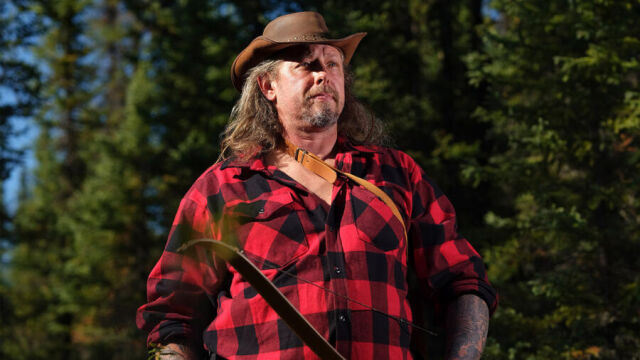
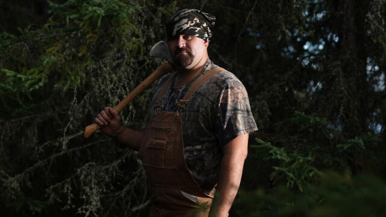
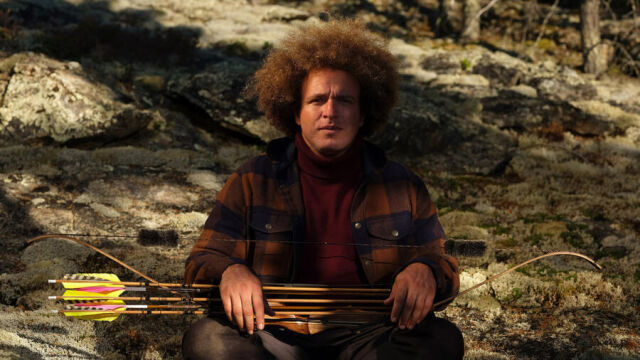
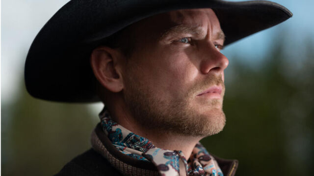

1stWinner
1stWinnerAlan Tenta
High School Teacher
- Lasted
- 66 days
- Age
- 52
- From
- Columbia Valley, British Columbia, Canada
Loadout
- Axe
- Multitool
- Saw
- Ferro rod
- Fishing Line and Hooks
- Bow and Arrows
- Sleeping Bag
- Cooking Pot
- Paracord
- Snare Wire
Alone
Predator Lake · Reindeer Lake, Saskatchewan, Canada · Dropped off 18 Sep 2022 · Premiered 8 Jun 2023
Days each survivalist lasted, in finishing order, and why they tapped out. Every season page uses the same 0–100 day scale so seasons can be compared at a glance.







Who they are, where they're from and the ten items they carried in.
1stWinnerHigh School Teacher
Loadout
Usiness Owner
Loadout
Carpenter
Loadout
4thplaceLiving History Teacher And Founder Of Wild Foods
Loadout
Direct Support Professional/ Musician/ Homesteader
Loadout
Hunting Guide
Loadout
7thplaceOwner Of Wild River Tables
Loadout
Entrepreneur And Glass Artist
Loadout
9thplaceOff-Grid Organic Farmer
Loadout
10thplacePilot
Loadout
How many survivalists chose each item (items grouped into simplified categories).
Air dates, survivalists remaining at the start of each episode, viewers and IMDb rating.
| Ep | Title & opening quote | Aired | Remaining | Viewers (M) | IMDb |
|---|---|---|---|---|---|
| 1 | Game On“The pathway to glory is rough, and many gloomy hours obscure it.” — Chief Black Hawk | 8 Jun 2023 | — | — | |
| 2 | Ties that Bind“Tactics without strategy is the noise before defeat.” — Sun Tzu | 15 Jun 2023 | — | — | |
| 3 | Growing Pains“Going to the mountains is going home.” — John Muir | 22 Jun 2023 | — | — | |
| 4 | Lake of Theives“We first make our habits, then our habits make us.” — John Dryden | 29 Jun 2023 | — | — | |
| 5 | Spirit Bears“The art of life is a constant readjustment our surroundings.” — Okakura Kakuzo | 6 Jul 2023 | — | — | |
| 6 | King's Gambit“When patterns are broken, new worlds emerge.” — Tuli Kupferberg | 13 Jul 2023 | — | — | |
| 7 | Aftermath“We may encounter defeats, but we must not be defeated.” — Maya Angelou | 20 Jul 2023 | — | — | |
| 8 | Infestation“Perseverance is not a long race; it is many short races one after the other.” — Walter Elliot | 27 Jul 2023 | — | — | |
| 9 | Splintered“Man is not what he thinks he is, he is what he hides.” — Andre Malraux | 3 Aug 2023 | — | — | |
| 10 | Rats“We must embrace pain and burn it as fuel for our journey.” — Kenji Miyazawa | 10 Aug 2023 | — | — | |
| 11 | By Any Means“Buck up, do your damnedest, and fight.” — Robert Service | 17 Aug 2023 | — | — |